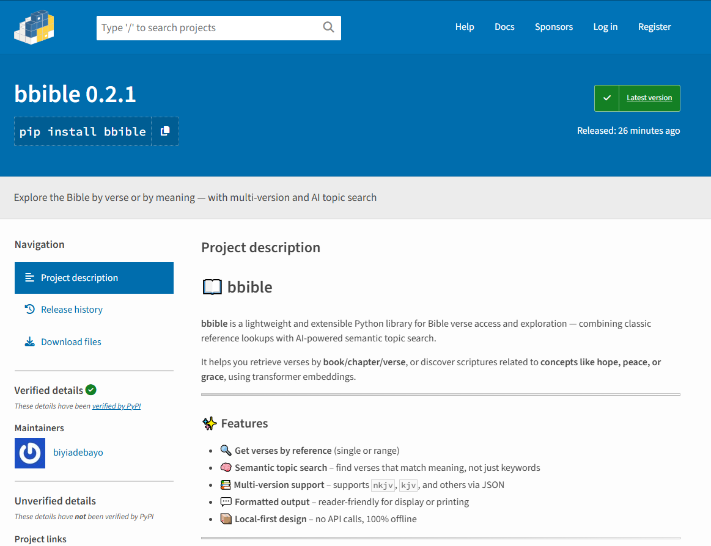

Featured Projects
Emotif - Emotion Sentiment from Text
Emotif is a simple web tool I built to help people quickly feel the emoitons in any text. Users can paste text of movie dialogue, review, text from a post, or any random text, and Emotif tells you the dominant emotions like joy, fear, anger, and so on. Built on Flask, JavaScript, and Hugging Face for the engine, and the results come with relatable charts and confidence scores. It’s useful for anyone who wants to know what kind of emotional energy a piece of content is carrying before diving in. Essentially it could protect children from content that is not fit for them.
A Bible Library (bbible)
bbible is a lightweight and extensible Python library for Bible verse access and exploration — combining traditional book-chapter-verse lookups with AI-powered semantic search. It supports multiple versions (like KJV and NKJV), allows natural language queries such as “peace in hard times”, and is designed to be simple enough for personal use, yet flexible enough for study tools, devotionals, and scripture-based apps.
Click to view 👉